公式番組「サカつくTV #9」で発表された新イベント、ハーフアニバーサリー、Ver2.1アップデート、SNSキャンペーンの内容を、攻略目線で分かりやすく整理しました。

本記事は公式番組「サカつくTV #9」の内容をもとに作成しています。
サムネイルをクリックするとYouTubeで公式番組を視聴できます。

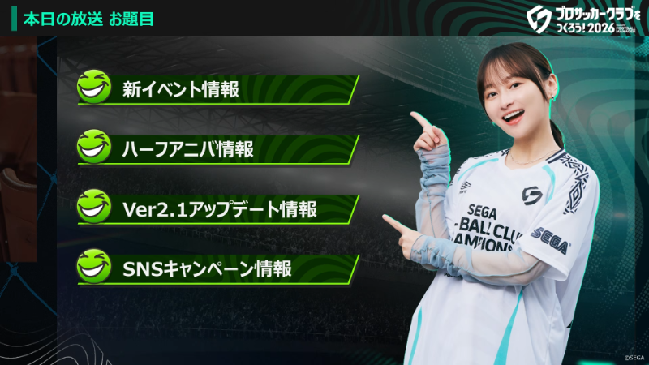
結論：今回の放送は、長期型PvEと毎週型PvPという2本の新イベントを軸に、無料100連を含むハーフアニバーサリー施策、育成のやり直しや時短を実現するVer2.1改善がまとめて発表された、非常に重要な内容でした。
- インターナショナルカップで16カ国を率いる長期育成型イベントが登場
- SPECIAL 1vs1で特殊ルール付き同期対戦を毎週開催予定
- ブラジルセレクションSP選手スカウトを最大100連可能
- サッカーの神様ペレを含む新ブラジルSP選手が登場
- 影山優佳さんがアシスタントとSSR特別練習カードで実装
- 選手強化リセット、演出スキップ、大会機能改善など快適性が向上
新イベント①：インターナショナルカップ

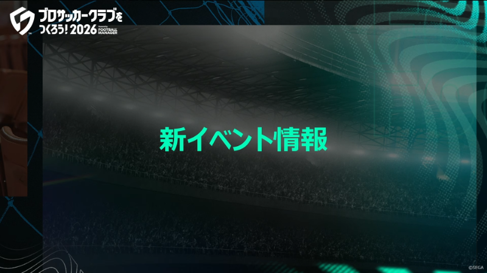

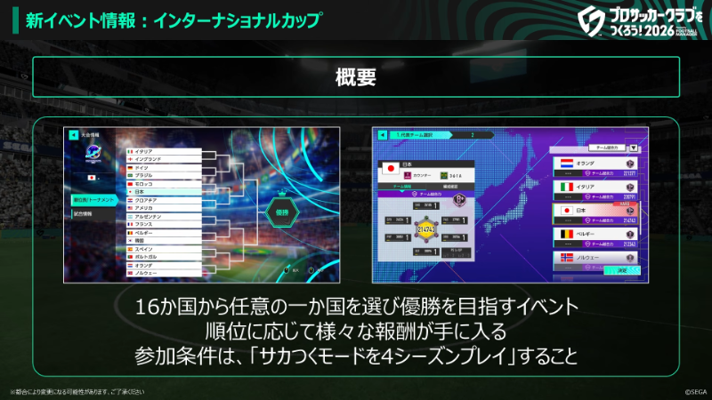
インターナショナルカップは、用意された16カ国の中から1カ国を選び、その国の監督としてトーナメント優勝を目指す新イベントです。結果順位に応じて報酬を獲得でき、難易度はノーマルとハードの2段階。まずノーマルで優勝すると、さらに難しいハードへ挑戦できます。
参加権は、サカつくモードを4シーズンプレイするごとに1回分獲得する設計です。GBを消費して参加権を得る方法も用意されますが、比較的長めの開催期間を想定した特別イベントのため、基本的にはサカつくモードを進めながらコツコツ挑戦する遊び方になりそうです。
手持ちのSP選手とフォーメーションコンボを使用可能

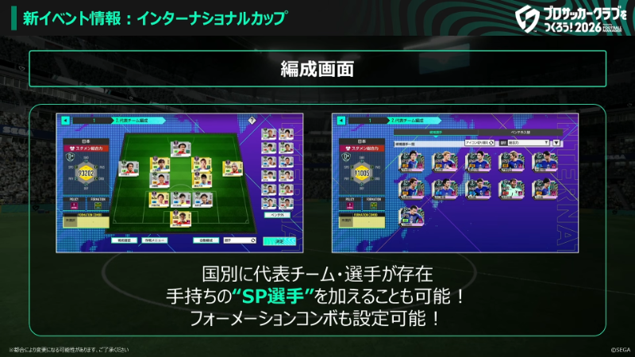
選択した国には最初から所属選手が用意されていますが、そこへ手持ちのSP選手を加えることができます。サカつくモードで育成した「選抜選手」ではなく、通常のSP選手をそのまま投入できる点が特徴です。
さらに、所持しているフォーメーションコンボも設定可能。普段は育成前で使いにくいSP選手を、イベント内の強化システムを利用しながら試せるコンテンツでもあります。
選手個人ではなく「国別チーム」を強化する

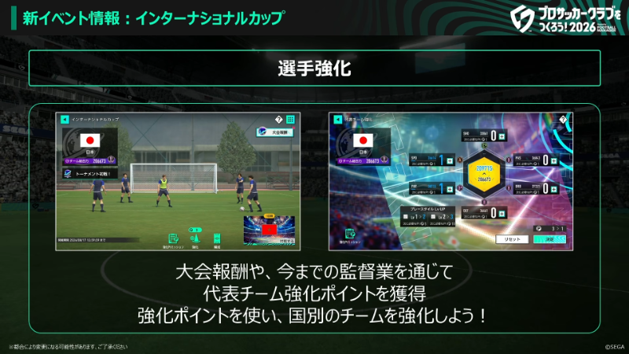
インターナショナルカップでは、大会結果や監督業を通じて強化ポイントを獲得します。このポイントをパスなどの能力項目へ割り振ることで、対象国に所属する選手全体を強化できます。
強化ポイントは全国家共通のため、日本へ集中投資するのか、複数国をバランス良く育てるのかという判断が必要です。番組では、初回はベスト16でも、強化を重ねてベスト8、最終的に優勝を目指すような反復型コンテンツとして説明されました。
能力値だけでなくプレースタイルLvも強化可能です。アタッカーやハードマーカーなどのLvを国単位で上げることで、初期状態では条件を満たせなかったフォーメーションコンボを発動できるようになります。
ミッション報酬と日本代表2026ユニフォーム

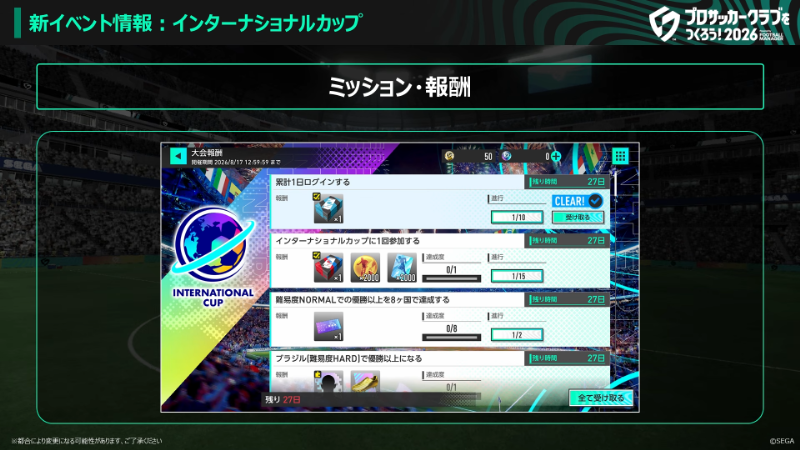
イベント内には、ログイン、インターナショナルカップへの参加、複数国でのノーマル優勝など、多数のミッションが用意されます。番組では「お祭り」として豪華寄りの報酬設計を予定していると説明されました。

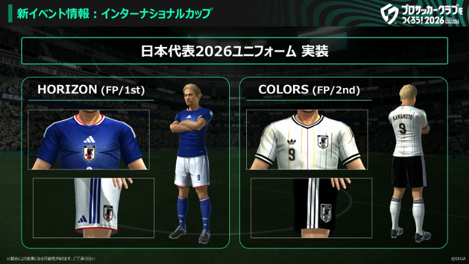
注目報酬：難易度ノーマルで日本を率いて優勝すると、サッカー日本代表2026ユニフォームを獲得できます。獲得後は自分のクラブでも着用可能です。
新イベント②：SPECIAL 1vs1

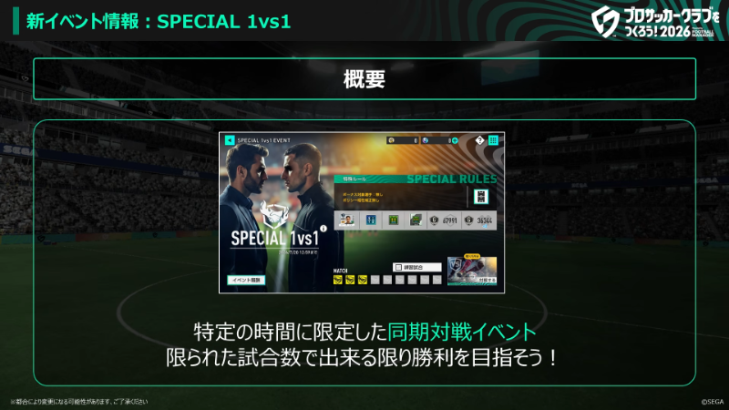
SPECIAL 1vs1は、限られた9試合の中で勝利数を競う同期対戦型イベントです。ワールドプレミアシップとは異なる新しい対戦軸として、Ver2.1アップデート後から開催されます。
本戦は金・土・日の特定時間、平日は練習試合

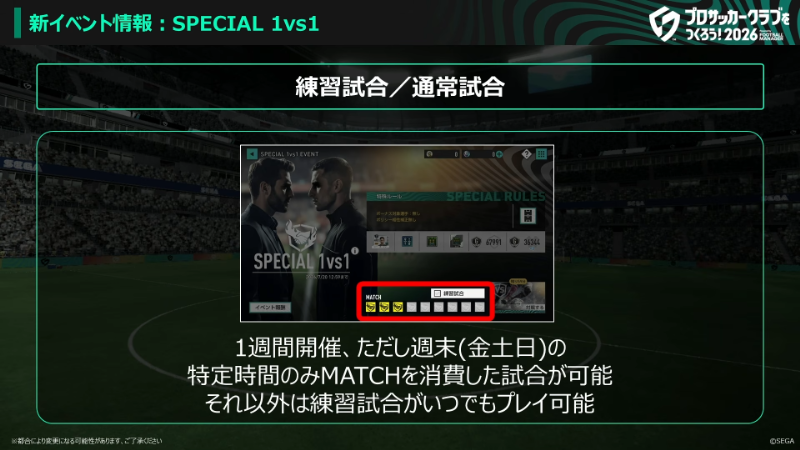
1回のイベント期間は1週間。本戦で試合数を消費できるのは、金曜日・土曜日・日曜日の特定時間です。開催時間を絞ることで参加者を集中させ、近い強さの相手とマッチングしやすくする狙いがあります。
平日は試合数を消費しない練習試合をプレイできます。ただしCPUは入らないため、時間帯によってはマッチングしない可能性があります。MCOやDiscord、Xなどで時間を合わせるか、利用者の多い時間帯に挑戦するのが良さそうです。
週ごとに特殊ルールが変化

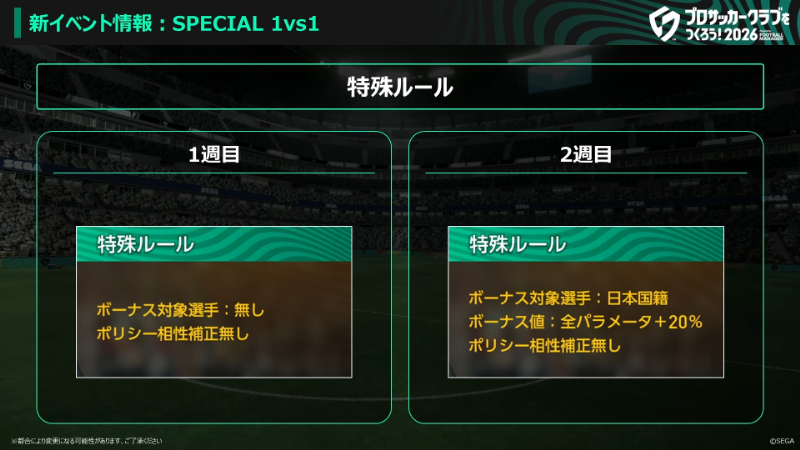
| 開催 | 特殊ルール | ポリシー相性補正 |
|---|---|---|
| 第1回 | ボーナス対象選手なし | なし |
| 第2回 | 日本国籍選手の全パラメータ＋20％ | なし |
第1回は特殊ボーナスのないプレーンな対戦、第2回は日本国籍選手が強化されるルールです。育成期間を確保できるよう、次回以降の特殊ルールは事前に開示する運用が予定されています。
現時点ではしばらく毎週開催する想定で、3週目以降も異なる特殊ルールが用意されます。毎週同じ最強編成を使い続けるのではなく、国籍や条件に合わせて複数チームを育成する価値が高まりそうです。
SPECIAL 1vs1コイン交換所

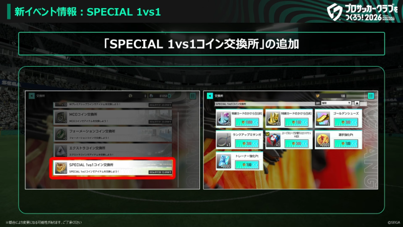
勝敗などに応じて専用コインを獲得し、交換所で報酬と交換できます。目玉は、入手機会の少なかった特別練習カードのかけらSSRです。
敗北時や参加でもポイントは得られますが、最も重要なのは勝利。マスター帯は獲得ポイントに補正がかかり、さらに編成戦力にもボーナスが付く予定です。一方で特殊ルール対象外の編成でも、勝てるならその選択は有効と説明されています。
攻略目線：ポリシー相性補正は基本的になし。相性による偶発的な大差より、事前公開された特殊ルールを読み、編成と育成で勝負するイベントとして設計されています。
ハーフアニバーサリー情報

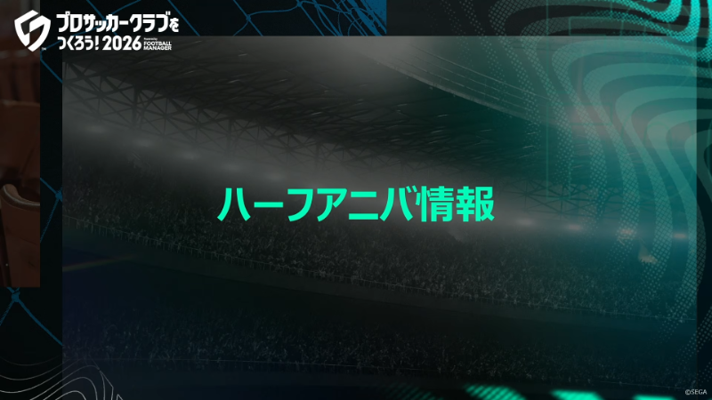

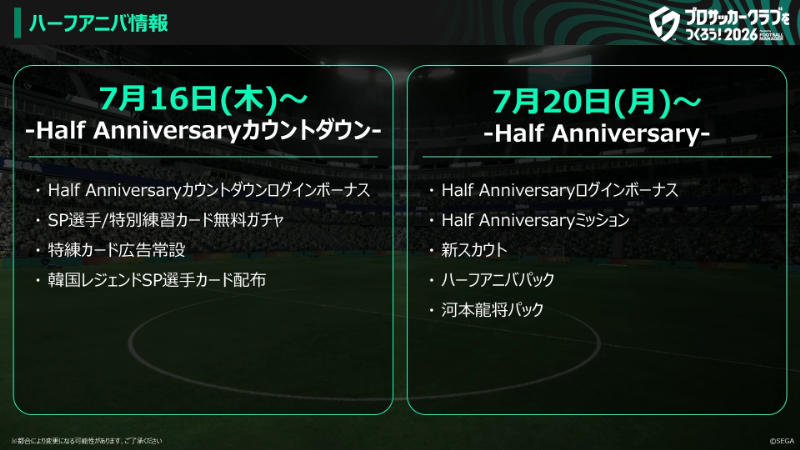
ハーフアニバーサリーは、Ver2.1アップデート日の7月16日から始まる前半と、半年記念日となる7月20日以降の後半に分けて開催されます。
カウントダウンログインボーナスで合計1500GB

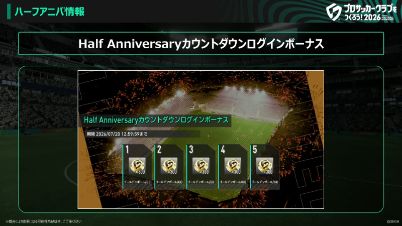
ハーフアニバーサリーへ向けたカウントダウンログインボーナスでは、合計1500GBを獲得できます。300GBずつ5日間に分けて配布されるため、期間中は毎日ログインしましょう。
SP選手・特別練習カードを毎日1回無料で引ける

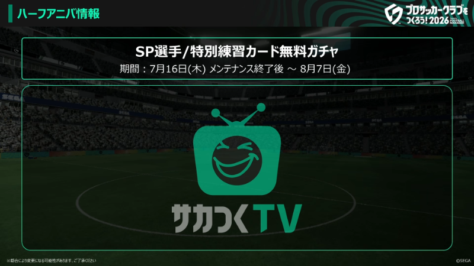
7月16日のメンテナンス終了後から8月7日まで、SP選手ガチャと特別練習カードガチャを、それぞれ1日1回無料で引けます。広告ガチャとは別枠の無料ガチャです。

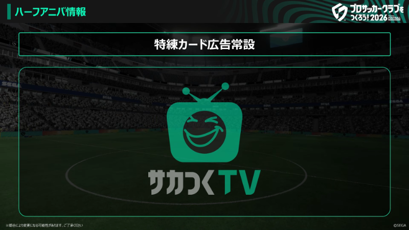
Ver2.0で期間限定実装されていた特別練習カードの広告ガチャは常設化されます。毎日忘れずに利用して、SSRや天井メダルの獲得機会を増やしましょう。
韓国レジェンド2選手を配布

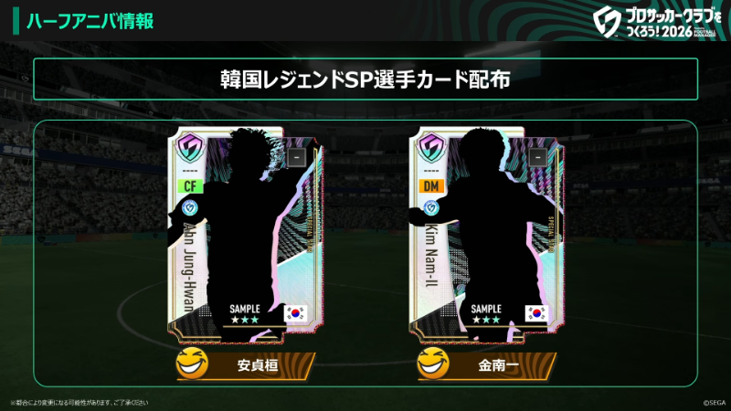
韓国のレジェンドとして、安貞桓（アン・ジョンファン）と金南一（キム・ナミル）のSP選手カードが配布されます。
7月20日から記念ログインボーナス

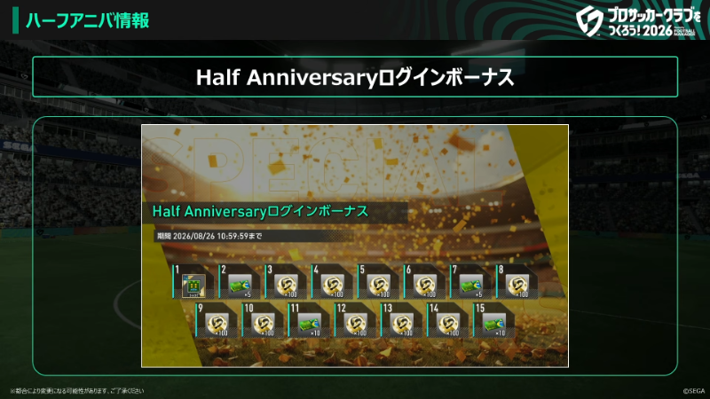
7月20日以降の記念ログインボーナスでは、ブラジル向けの金フォーメーションコンボ、ブラジルセレクションSP選手スカウトチケット30枚、合計1000GBなどを獲得できます。
記念ミッションと合わせて最大100連

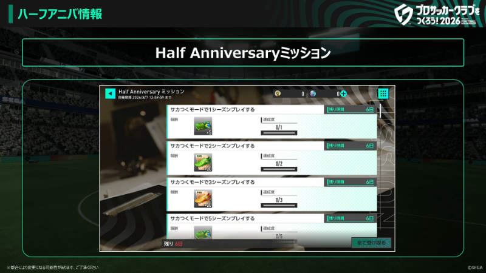
ハーフアニバーサリー記念ミッションでは、ブラジルセレクションSP選手スカウトチケット70枚、虹のかけら10個、ゴールデンシューズ、ランクアップミサンガ15個などを獲得できます。
最大100連：ログインボーナス30枚＋記念ミッション70枚で、ブラジルセレクションSP選手スカウトを合計100連できます。
ブラジルセレクションSP選手スカウト

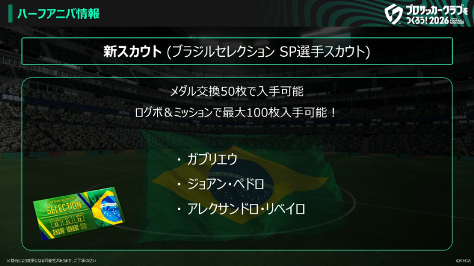
既に実装済みのブラジル国籍★3SP選手、ガブリエウ、ジョアン・ペドロ、アレクサンドロ・リベイロを獲得できる特別ガチャです。
通常200枚のメダル交換に対し、今回は50枚で★3SP選手1名と交換できます。最大100連分のチケットを集めれば、交換だけでも★3選手2名を確実に獲得可能です。
ペレ、ヴィニシウス、エデル・ミリトン、エデルソン登場

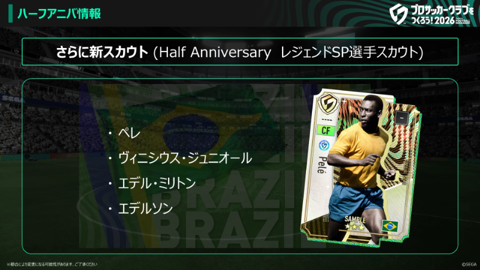
ハーフアニバーサリーレジェンドSP選手スカウトには、サッカーの神様ペレに加え、ヴィニシウス・ジュニオール、エデル・ミリトン、エデルソンが登場します。
ペレはスーパーレジェンド級の特別枠として、レトロ・セピア調の専用カードデザインを採用。低確率でサイン版も排出されます。能力は番組収録時点で調整中ですが、非常に強力な選手になることが期待されます。
ハーフアニバーサリーパック

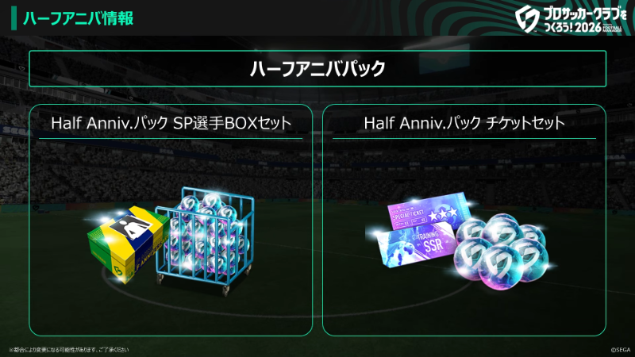
SP選手BOXセット
レインボーボールに加え、ペレを除く新選手3名から獲得できるSP選手BOXが付属します。
チケットセット
レインボーボール、★3確定SP選手スカウトチケット、SSR確定特別練習カードチケットを獲得できます。
河本龍将パック

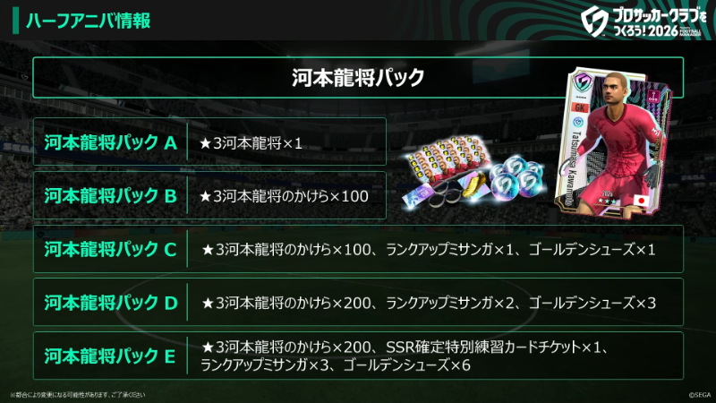
サカつくシリーズのレジェンド選手河本龍将を獲得できるパックも7月20日以降に常設されます。価格の異なる複数パックを購入することで、最終的に完凸を目指せる構成です。
Ver2.1アップデート情報

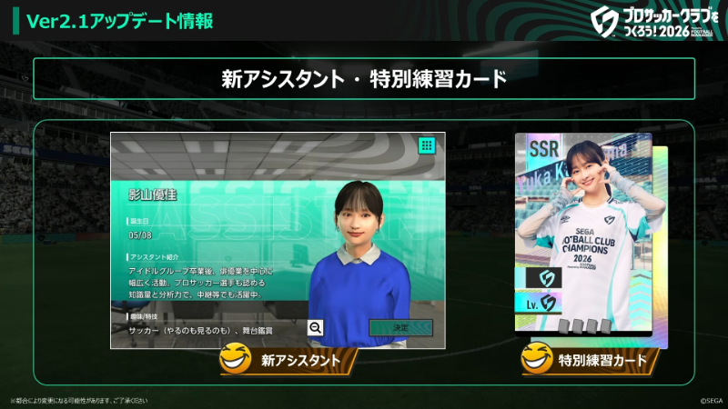
影山優佳さんがゲーム内に登場
新PVに出演した影山優佳さんが、7月16日から新アシスタントとして実装されます。専用ドラマと効果も用意されています。
SSR特別練習カードはアップデート後に1枚配布。影山優佳さんをアシスタントに設定してサカつくモードを1シーズンプレイするごとに、最大4枚を追加獲得でき、合計で完凸を目指せます。
選手強化リセット

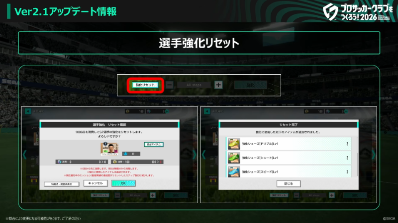
選手強化リセットが追加されます。ロスター更新後の同名選手や、育成方針を見直したい選手から、使用済みの強化素材を回収して振り直せる機能です。
実行にはGBが必要です。無料にすると対戦相手ごとに素材を付け替える運用が最適解になってしまうため、一定のコストを設定したと説明されました。
開発意図：ゴールデンシューズなどを「もったいなくて使えない」状態を減らし、好きな選手へ思い切って投入できるようにするための機能です。
直接オファー演出を省略可能

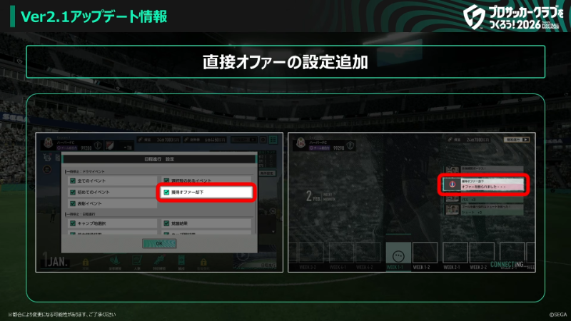
設定項目から直接オファー関連の表示をオフにすると、オファーを断られた際の演出を省略できます。小さな変更ですが、周回時のタップ数と待ち時間を減らす実用的な改善です。
大会機能を改善

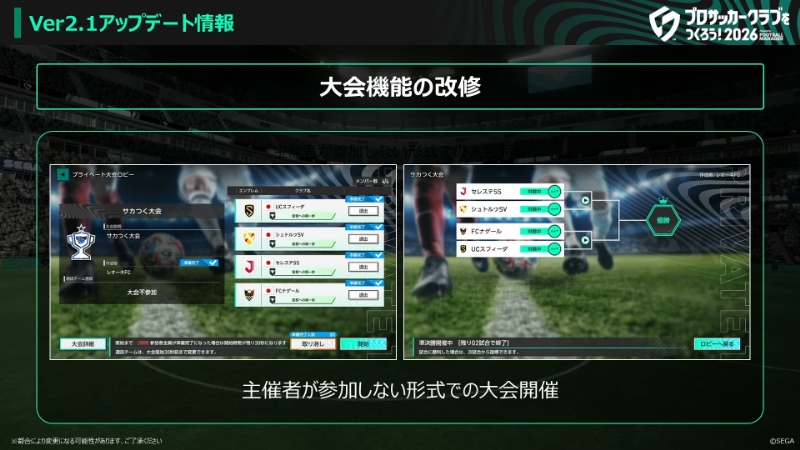
主催者が大会に参加しない形式を選べるようになります。配信者が実況・観戦役に回ったり、自分が条件を満たせない縛り大会を主催したりすることが可能です。
また、参加者全員が「準備完了」を押すと、従来の待ち時間を待たずに即時開催できるようになります。
一部演出のスキップと操作待ちの短縮

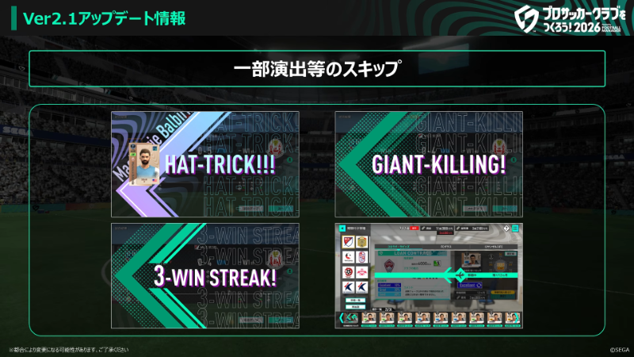
ハットトリック、ジャイアントキリング、3連勝・10連勝などの演出をタップでスキップ可能になります。期限付き移籍の資金減算演出中も、終了を待たずに次の操作へ進めるようになります。
ショートカットメニューとガチャ履歴

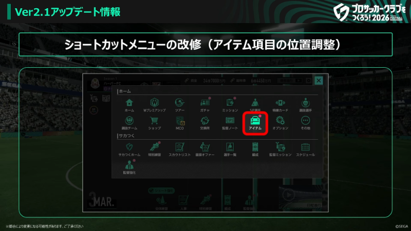
デイリーのBOX開封などで利用頻度が高まった「アイテム」が、ショートカットメニュー内へ移動します。従来の配置からは削除されるため、アップデート後は操作場所に注意しましょう。

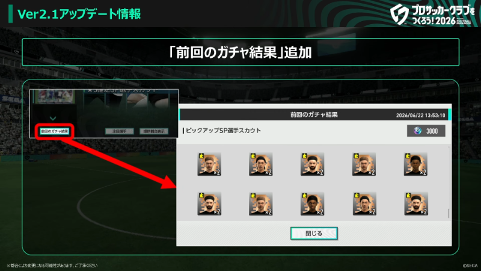
通信や画面遷移などで結果を正常に確認できなかった場合に備え、ガチャページへ前回のガチャ結果が追加されます。
アーカイブコイン交換所

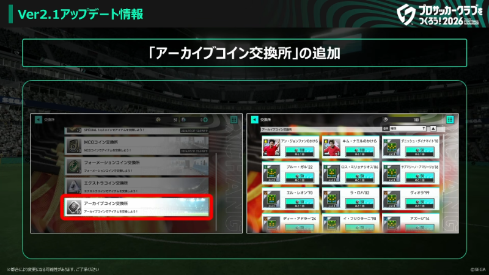
ログインボーナスなどで獲得できるアーカイブコインを使い、過去イベントで配布されたSP選手、特別練習カード、フォーメーションコンボなどと交換できるようになります。
開始時点では安貞桓、金南一のかけらやフォーメーションコンボなどが交換対象。期間限定品を取り逃した新規・復帰プレイヤーへの救済策であり、交換ラインナップは定期的に更新される予定です。
今後の改善方針は「時短・拡張・納得」

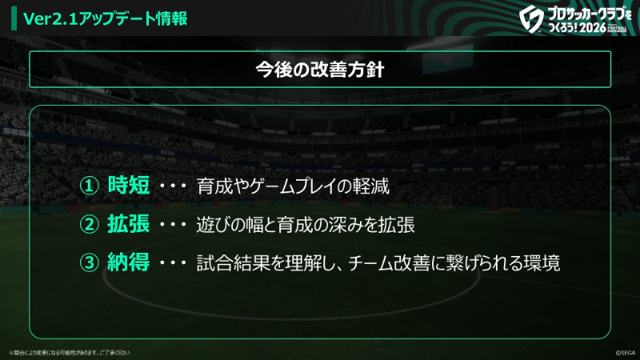
時短
育成やゲームプレイの負担を軽減し、操作性を改善。3テーマの中でも最重要と位置付けられています。
拡張
時短だけで単調にならないよう、新しい遊びと育成の深みを追加します。
納得
なぜ負けたのか、どう改善すればよいかを理解できる環境を整備します。
SNSキャンペーンと次回放送

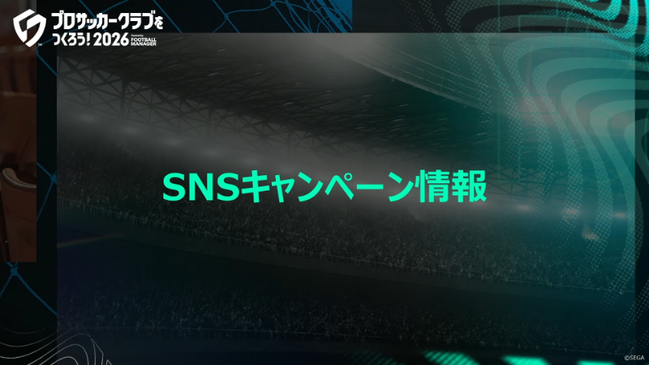

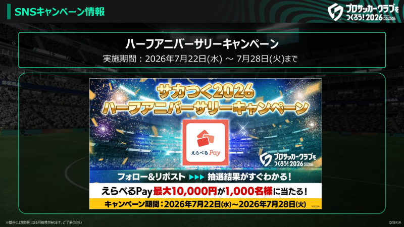
7月22日から、ハーフアニバーサリーを記念した公式Xフォロー＆リポストキャンペーンが実施されます。抽選で1000名に、選べるPayが最大1万円分当たります。

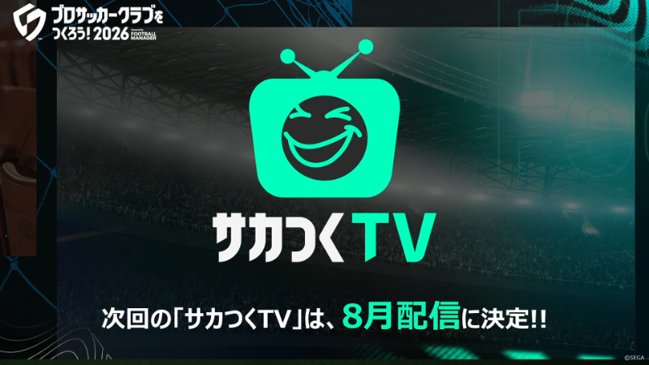
ソニオTVのオレ的注目ポイント
1. 育成すべきチームが一気に増える
SPECIAL 1vs1で国籍などの特殊ルールが毎週変わるため、従来の主力1チームだけでは対応しにくくなります。今後は日本国籍、ブラジル国籍、特定ポリシーなど、複数テーマの選手を計画的に育成する重要性が高まります。
2. インターナショナルカップは長期投資型
共通の強化ポイントをどの国へ使うかで攻略方針が変わります。ユニフォーム獲得を優先するなら、まず日本へ集中投資するのが分かりやすい選択です。その後、報酬条件に合わせて他国へ広げる流れが効率的と考えられます。
3. 無料100連は確実な★3交換まで含めて考える
ブラジルセレクションは、単に100回引けるだけでなく、メダル50枚で★3選手を交換できます。ログインとミッションを完了すれば、最低でも★3選手2名を確保できる点が最大の価値です。
4. 選手強化リセットで素材を使いやすくなる
リセットにはGBが必要ですが、取り返しのつかない育成ではなくなります。特にゴールデンシューズを温存し続けていたプレイヤーにとって、主力選手へ投入する心理的なハードルが下がります。
5. アーカイブ交換所で期間限定品の価値が変わる
過去イベント限定のフォーメーションコンボや選手が再入手可能になるため、復帰時期による戦力差が緩和されます。一方で追加時期には間隔を空ける予定なので、開催中の報酬を確保する重要性は変わりません。
まとめ：Ver2.1は「遊びの追加」と「快適性改善」を両立
サカつくTV #9では、インターナショナルカップとSPECIAL 1vs1という性質の異なる新イベントが発表されました。前者は国別チームを長期的に育てるPvE、後者は毎週の特殊ルールへ対応するPvPであり、育成した選手の活躍場所が大きく広がります。
ハーフアニバーサリーでは、最大100連のブラジルセレクション、毎日無料ガチャ、ペレを含む新SP選手、合計2500GB相当のログイン施策など、半年記念にふさわしい内容が用意されています。
Ver2.1では、選手強化リセット、各種演出スキップ、大会の即時開催、アーカイブコイン交換所など、プレイヤーからの要望を反映した改善も多数実装されます。今後も「時短・拡張・納得」の3軸で大規模な機能改善を計画しているとのことで、次回のサカつくTV #10にも注目です。
注意：本記事は公式番組の文字起こしと番組内スライドをもとに作成しています。実装時に開催期間、報酬内容、必要アイテム、ガチャ仕様などが変更される可能性があります。